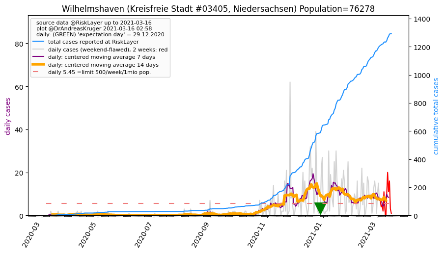
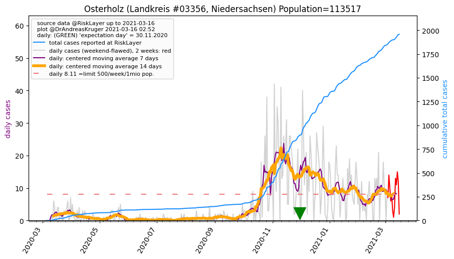
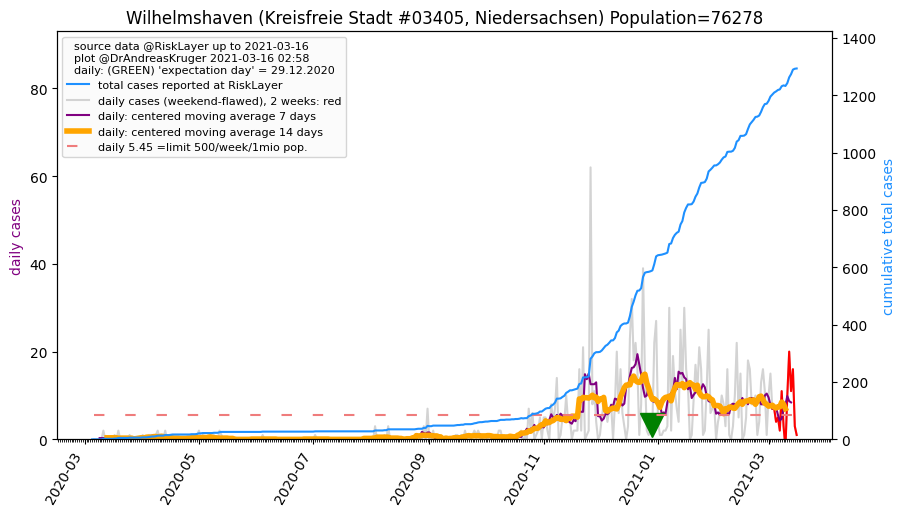
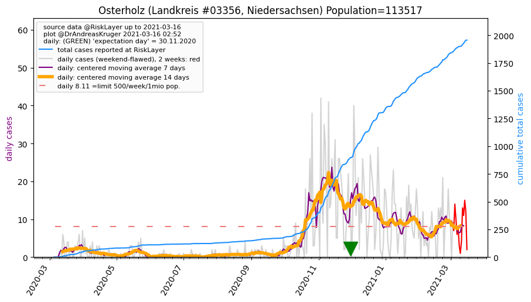

")
")
")


")
")
| Bremerhaven_KS (0.0 km) |
Cuxhaven_LK (17.2 km) |
Wesermarsch_LK (24.1 km) |
| Wilhelmshaven_KS (33.4 km)  |
Osterholz_LK (35.1 km)  |
Friesland_LK (40.3 km) |
| Bremen_KS (48.3 km) |
All plots are regenerated with new data every night. Beware this temporary hotspot is an experimental page - it might get removed, so please do not link to it. Instead link to project http://tiny.cc/cov19de.